Role
Team
Research Methods
Duration
Published my work titled "Behaviors, Problems and Strategies of Visually Impaired Persons During Meal Preparation in the Indian Context : Challenges and Opportunities for Design" at ASSETS 2020 and presented it in the Student Research Competition.
Placed 2nd in the Graduate Papers category.
Below is a condensed presentation of the content within the paper.
Abstract
Meal preparation is a complex multisensorial task that requires many decisions to be made based on the appearance of the dish. This alienates individuals with low vision and makes cooking meals independently inaccessible. Products designed for individuals with low vision rarely aid with tasks that involve application of heat. As people with vision impairments have different requirements for technology, it is imperative that the behaviours and problems faced are thoroughly understood. A study to understand how users perform tasks involving heat application was conducted. Four cooking techniques commonly used to prepare Indian dishes were identified and interviews were carried out with a diverse group of visually impaired persons (n=12). The findings include insights about behaviours, problems and strategies employed by visually impaired persons while preparing meals using the following techniques: Boiling, Simmering, Roasting, and Frying. This work describes factors that affect behaviour during meal preparation by Indian visually impaired persons, and the various strategies used to mitigate challenges faced. The findings have been used to propose a set of considerations that have implications on the design of accessibility tools such as assistive devices, rehabilitation programs and strategies.
Research Overview
Context
Preparing a meal is a basic activity needed for survival. It is a complex multi-sensorial task. Many decisions taken when preparing a meal are dependent on sight. Being able to prepare a meal can affect the quality of the life of an individual. There is lowered nutrition levels among Visually Impaired Persons (VIPs) due to their reduced ability to shop and prepare meals independently.
The body of research dealing with Assistive devices directly related to cooking is slim, with most products considering ergonomic needs, but not focusing on the state of the food being prepared. Given this, an extensive Primary research was conducted.
The Study
Structure
Format
Analysis
Findings
The findings are categorised into the cooking techniques of boiling, simmering, roasting and frying. A secondary level of categorisation is also done using colours. Problems are coded in red, behaviours in blue and strategies in green.
Boiling
Boiling is the process of cooking food in boiling water, or other water based liquids such as milk. This generally results in vegetables becoming soft and tender, and easy to chew.
 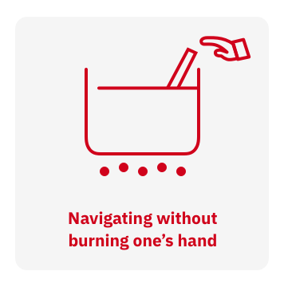
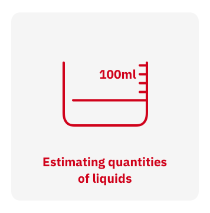
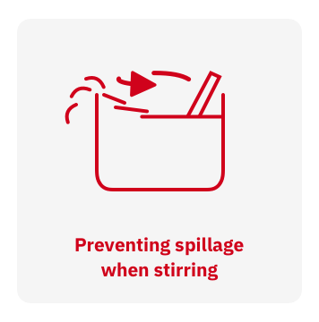
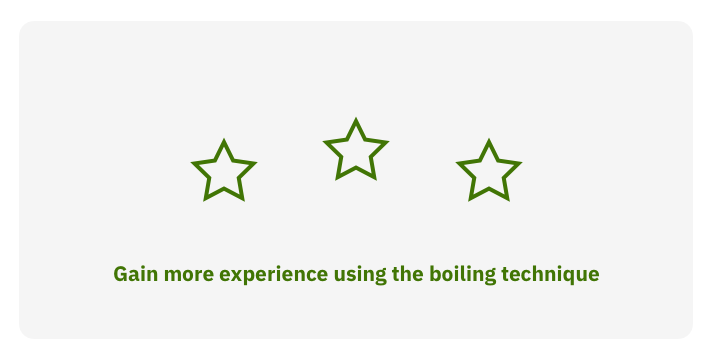
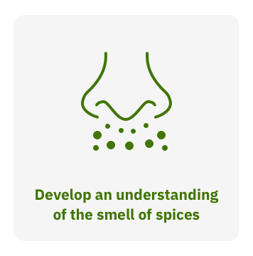
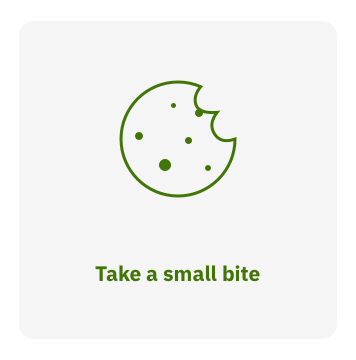
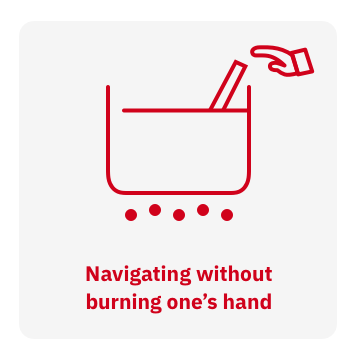
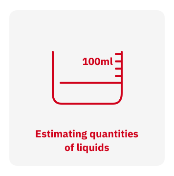
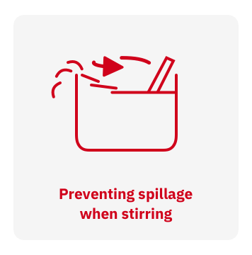
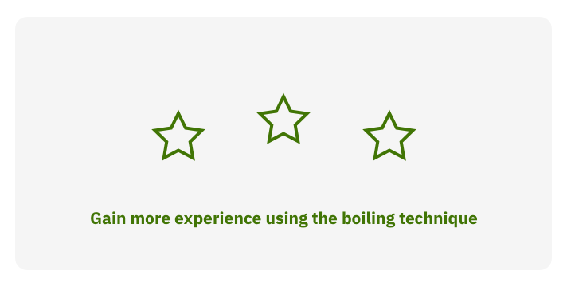
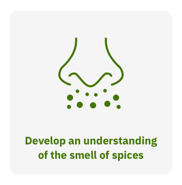
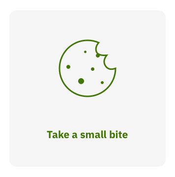
Simmering
Simmering is a process in which foods are cooked in hot liquids just below their boiling temperature. This technique is used to prepare most Indian gravies.
Roasting
Roasting is a technique that involves cooking food with dry heat with a small amount of cooking oil applied on the pan to prevent the food from sticking to it. Foods commonly prepared in this method are rotis, dosas, and processed meats.
Frying
Frying is the process of cooking food in oil or any fat. There are many kinds of frying, but for the purpose of this discussion, frying shall refer to the act of deep frying, which involves immersing the food wholly in the oil/fat. Many foods are prepared using this technique, such as puris, vadas, pakodas, and other western dishes such as french fries, fried chicken etc.